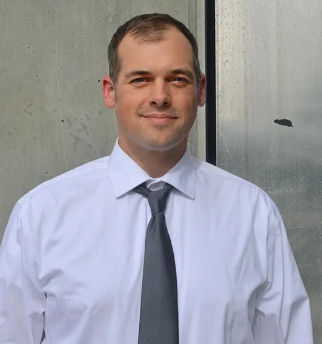

Software/Firmware Engineer
Lansmont Corporation, Monterey, CA. C/C++, FreeRTOS, Yocto Linux, Xilinx SoC/FPGA platforms, U-Boot, serial and TCP controller communication, Git, and Azure DevOps.

Computer scientist / researcher / builder
I am a software and firmware engineer with a Master of Science in Computer Science from UC Davis. My work spans embedded control systems, networked services, authentication and authorization flows, distributed systems, security, and applied full-stack development.
Professionally, I build firmware and control software for industrial measurement systems, host applications that communicate with controllers over serial and TCP links, and tooling that supports reliable release workflows across distributed teams.
Current work
Lansmont Corporation, Monterey, CA. C/C++, FreeRTOS, Yocto Linux, Xilinx SoC/FPGA platforms, U-Boot, serial and TCP controller communication, Git, and Azure DevOps.
CSUMB CST 311. Developed labs and programming assignments, led office hours, and supported student work in networking and systems topics.
Community Builders for Monterey County. Analyzed impact data, tracked website analytics, and built scripts for API queries, dashboards, and visualizations.